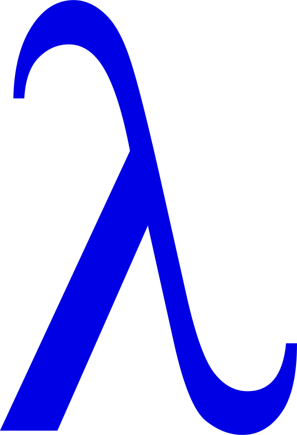
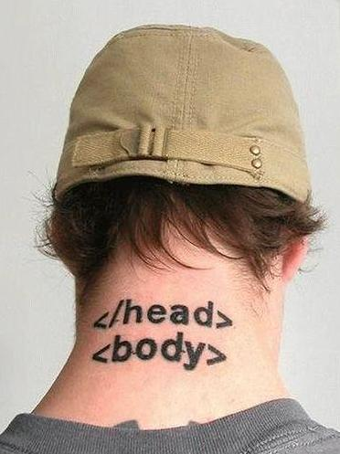
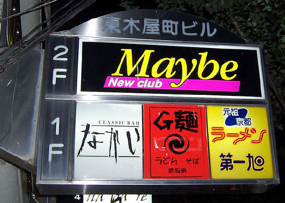
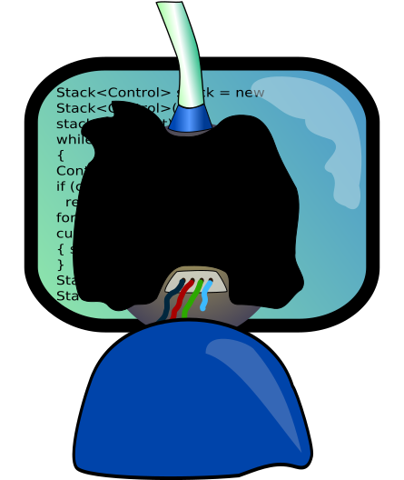

Making Code More Functional
Lambda Land in Layperson's Language

Katie Miller (@codemiller) & Steve Dalton (@spidie)
What is this Functional Programming of which you speak?


- "[I]ts fundamental operation is the application of functions to arguments." — John Hughes
- Pure functions have no side-effects and are referentially transparent
- "A main program itself is written as a function that receives the program's input as its argument and delivers the program's output as its result." — John Hughes
- "You don't tell the computer what to do as such but rather you tell it what stuff is." — Learn You A Haskell
- Functions are first-class; higher-order functions take other functions as arguments or return a function as a result
More Than a Passing Trend?
- GitHub rankings: Scala #15, Haskell #18, Clojure #23, Erlang #28, Common Lisp #31, Scheme #32, Ocaml #40
- New languages: Scala (2003), F# (2005), Clojure (2007), LINQ (2007), Roy (2011)
- New features: Java (lambda expressions), Python (lambda, filter, map), PHP (first-class functions), C# (first-class functions)
- Increase in FP language book sales
- Erlang used at Yahoo!, Facebook, GitHub, Amazon; Scala used at LinkedIn, Twitter, FourSquare; Haskell used at Facebook and Google
So what are the benefits?

- Ability to reason about program behaviour
- Removing side-effects aids concurrent programming
- Modularity and function composition aids code reuse. eg.
- myfunc = toUpper . trim
- myfunc("abracadabra ") -> "ABRACADABRA"
- Programs are more succinct
- Automated test generation
Learning Haskell will make you a better Java programmer ... it will rewire your brain in a way that will make you write better Java programs.— Simon Peyton Jones (Haskell Creator), YOW! 2011
Immutability
Why immutable?
- Protects code from misuse
- Unchanged parts of structures can be shared between old and new copies, so it's not so wasteful as you might think
- Immutable data can safely be shared among multiple threads
- Encourages us not to throw away potentially useful data
Immutable in Python
class Dog(object):
def __setattr__(self, *args):
raise TypeError("can't modify immutable instance")
__delattr__ = __setattr__
def __init__(self, name):
super(Dog, self).__setattr__('name', name)
billy = Dog('Billy')
billy.name = 'Buster' # no can do!
Immutable in PHP
class Dog
{
private $name;
public function __construct($name)
{
$this->name = $name;
}
public function __get($key)
{
if (property_exists($this, $key)) {
return $this->{$key};
} else {
throw new \RuntimeException("Property doesn't exist");
}
}
public function __set($key, $value)
{
throw new \RuntimeException("This object is immutable");
}
}
$billy = new Dog("Billy");
$billy->name = "Buster"; // no dice!
Immutable DateTime in PHP
class ImmutableDateTime
{
private $_dt;
public function __construct($time = 'now', DateTimeZone $timezone = NULL) {
$this->_dt = new DateTime($time, $timezone);
}
...
public function add(DateInterval $interval) {
$clone = clone($this->_dt);
$clone->add($interval);
return $clone;
}
public function setDate($year, $month, $day) {
throw new ImmutableException();
}
}
class ImmutableException extends \Exception {
public function __construct() {
parent::__construct("Can't modify immutable DateTime!");
}
}Lambdas/Closures

- A lambda expression is an anonymous function
- Supporting languages include: C, C# 2, C++ 11, JavaScript, PHP 5.3, Perl, Ruby
- A closure is a function with a referencing environment; it 'closes over' its surrounding scope
- Supporting languages include: C# 2, Java 8, JavaScript, Python, PHP 5.3, Perl, Ruby
- In Java 7 and earlier, function objects can be used to simulate first-class functions
Restful Animal Calls
void saveCat(final AnimalCallback<Cat> cb, final Cat cat) {
try {
cb.begin();
createRestClient(cb).updateCat(cat);
} catch (final Exception ex) {
cb.generalException(ex);
}
}
void getCow(final AnimalCallback<Cow> cb, final int id) {
final String exp = "{\"tail\":{\"type\": \"" + TAIL + "\"}}";
try {
cb.begin();
createRestClient(cb).getCow(id, exp);
} catch (final Exception ex) {
cb.generalException(ex);
}
}
void saveDog(final AnimalCallback<Dog> cb, final Dog dog) {
try {
cb.begin();
createRestClient(cb).updateDog(dog, BARK);
} catch (final Exception ex) {
cb.generalException(ex);
}
}
Restful Animal Calls Refactored
interface Caller {
public void call() throws Exception;
}
<T> void doCall(AnimalCallback<T> cb, Caller restCaller) {
try {
cb.begin();
restCaller.call();
} catch (final Exception e) {
cb.generalException(e);
}
}
void saveCat(final AnimalCallback<Cat> cb, final Cat cat) {
doCall(cb, new Caller() {
@Override
public void call() throws Exception {
createRestClient(cb).updateCat(cat);
}
});
}
void getCow(final AnimalCallback<Cow> cb, final int id) {
final String exp = "{\"tail\":{\"type\": \"" + TAIL + "\"}}";
doCall(cb, new Caller() {
@Override
public void call() throws Exception {
createRestClient(cb).getCow(id, expand);
}
});
}
void saveDog(final AnimalCallback<Dog> cb, final Dog dog) {
doCall(cb, new Caller() {
@Override
public void call() throws Exception {
createRestClient(cb).updateDog(dog, BARK);
}
});
}
Restful Animal Calls In Java 8
interface Caller {
public void call() throws Exception;
}
<T> void doCall(AnimalCallback<T> cb, Caller restCaller) {
try {
cb.begin();
restCaller.call();
} catch (final Exception e) {
cb.generalException(e);
}
}
void saveCat(AnimalCallback<Cat> cb, Cat cat) {
doCall(cb, () -> createRestClient(cb).updateCat(cat));
}
void getCow(AnimalCallback<Cow> cb, int id) {
String exp = "{\"tail\":{\"type\": \"" + TAIL + "\"}}";
doCall(cb, () -> createRestClient(cb).getCow(id, exp));
}
void saveDog(AnimalCallback<Dog> cb, Dog dog) {
doCall(cb, () -> createRestClient(cb).updateDog(dog, BARK));
}
Alternatives to loops

- Use Recursion and Higher-Order Functions; shorter and more elegant
- Map applies a function to every element in a list
- Filter filters a list based on a test (predicate)
- Fold takes a function and folds it in between the elements of a list
- List Comprehension - alternative syntax
- Recursion criticism: Can be slower and wasteful due to having to maintain a stack
- Use tail recursion if your compiler supports tail-call optimisation
Map/Filter in perl
my @list = (1 .. 4);
my @mult = map { $_ * 2 } @list;@list = 1 2 3 4
@mult = 2 4 6 8
my @numbers = (8, 2, 5, 3, 1, 7);
my @big_numbers = grep { $_ > 4 } @numbers;@big_numbers = 8 5 7
Fold Example
fold + 0 [3,5,2,1]
Fold in Perl
reduce block initval, listreduce { $a < $b ? $a : $b } 1..10result: 1 (min)
reduce { $a lt $b ? $a : $b } 'aa'..'zz'result: aa (minstr)
reduce { $a + $b } 0, 1..10result: 55 (sum).
reduce { $a . $b } 'a'..'z'result: abcdefghijklmnopqrstuvwxyz (concat)
List comprehension in Python
Standard For Loop:squares = []
for x in range(10):
squares.append(x**2)Using List Comprehension:
squares = [x**2 for x in range(10)]result: [0, 1, 4, 9, 16, 25, 36, 49, 64, 81]
Maybe/Option Data Structure

- Often found in languages used for FP, such as Haskell (Maybe), Scala (Option) and F# (Option)
- An option or maybe data type makes the possible absence of a meaningful value explicit
I call it my billion-dollar mistake.— QuickSort inventor Sir Tony Hoare on his invention of the null reference
It's not always obvious that null means 'no value for this parameter' — heck, as a return value, sometimes it means 'error', or even 'success' (!!), or simply 'the correct answer is nothing'.— Louis Wasserman of the Google Guava team
Guava Optional Example in Java
public static void main(String[] args) {
Map<Integer, String> petEnclosures = newHashMap();
petEnclosures.put(101, "Spot");
petEnclosures.put(102, "Fluffy");
petEnclosures.put(103, null);
petEnclosures.put(104, "Felix");
int enclosure = getEnclosureArg(args);
String petName = petEnclosures.get(enclosure);
System.out.println("Enclosure contains " + petName);
// What does a null petName mean here?
}
Guava Optional Example in Java
static <K, V> Optional<Optional<V>> lookup(Map<K, V> map, K key) {
if (! map.containsKey(key)) {
return Optional.absent();
}
return Optional.of(Optional.fromNullable(map.get(key)));
}
public static void main(String[] args) {
Map<Integer, String> petEnclosures = newHashMap();
petEnclosures.put(101, "Spot");
petEnclosures.put(102, "Fluffy");
petEnclosures.put(103, null);
petEnclosures.put(104, "Felix");
Optional<Optional<String>> enclosureValue = lookup(petEnclosures, enclosure);
if (! enclosureValue.isPresent()) {
printErrorAndExit("Enclosure number invalid");
}
petName = enclosureValue.get().or("nothing");
System.out.println("Enclosure contains " + petName);
}
Monadic Option Example Usage in Java 8
// Author: Mario Fusco
int readPosInt(Map<String, String> map, String name) {
String value = map.get(name);
if (value == null) return 0;
int i = 0;
try {
i = Integer.parseInt(value);
} catch (NumberFormatException nfe) { }
if (i < 0) return 0;
return i;
}
int readPosIntWithOption(Map<String, String> map, String name) {
return asOption(map.get(name))
.flatMap(FunctionUtils::stringToInt)
.filter(i -> i > 0)
.getOrElse(0);
}
Maybe Example in Python
# Author: Fraser Tweedale
class Maybe(object):
@classmethod
def ret(cls, x): return Just(x)
class Nothing(Maybe):
def __init__(self): pass
def __rshift__(self, f): return self
def __repr__(self): return 'Nothing()'
class Just(Maybe):
def __init__(self, x): self._x = x
def __rshift__(self, f):
return f(self._x)
def __repr__(self): return 'Just({!r})'.format(self._x)
def mdiv(n, d):
return Nothing() if not d else Just(n / d)
def divby(d):
return lambda n: mdiv(n, d)
print Just(10) >> divby(2) // Just(5)
print Just(10) >> divby(0) // Nothing()
print Just(10) >> divby(0) >> divby(2) // Nothing()
print Just(16) >> divby(2) >> divby(2) // Just(4)
What Next?
- Find out what built-in support and FP libraries are available for your language
- Join an FP user group or meetup
- Learn a language like Haskell, Scala, Erlang or Clojure
- Form an FP study group
- Attend Lambda Jam 2013 in Brisbane
Links, References and Credits
Definitions and Explanations
Popularity and Usage
Presentations and Code
- Making Code More Functional: Katie Miller and Steve Dalton
- Functional Python: Fraser Tweedale
- Functional Perl: Chris McKay
- Why Functional Programming Matters Presentation: Liam McLennan
- State of the Lambda (in Java)
- On the Road to JDK8
- No More Excuses To Use Null References in Java 8
- Immutable DateTime Objects in PHP
- PHP DateTime Alternative
- The Functional C Experience
FP Libraries/Modules
Image Credits
- Learn You A Haskell
- Open Clip Art Library
- Code Washing
- Kittens
- Lamb
- Maybe Club
- Pug
- Tattoo (original source unknown)